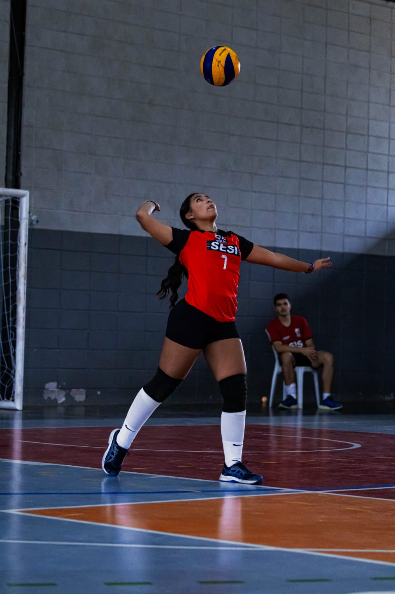
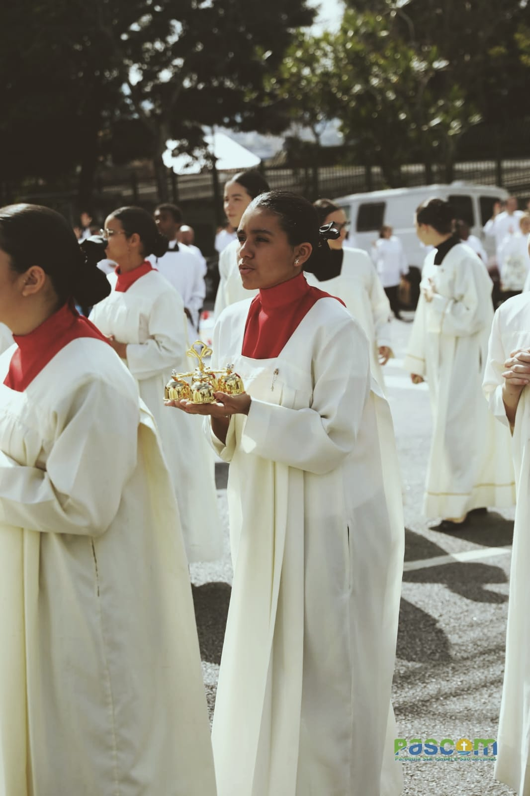
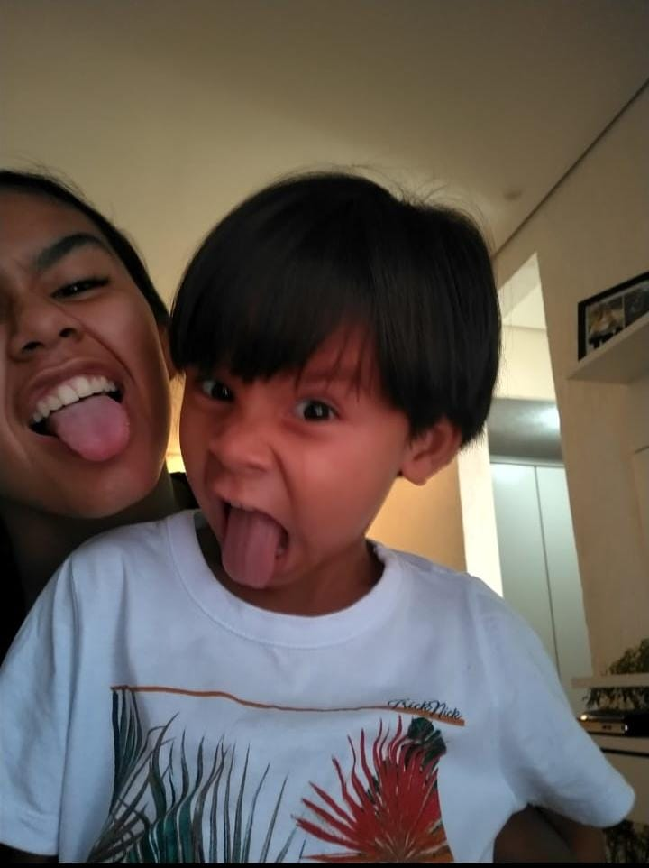

Vôlei
Eu amo jogar vôlei. Participei de campeonatos em nome do SESI e do time de Osasco.
Integrante 1
"A coragem não é a ausência do medo, mas a certeza de que algo é mais importante que ele."
Manuela Dias Velozo. tanannana


Meu nome é Manuela Dias Velozo, mas podem me chamar de Manu, até prefiro. Nasci no dia 18 de março de 2011. Minha cor favorita é azul, de todos os tons possíveis.

Eu amo jogar vôlei. Participei de campeonatos em nome do SESI e do time de Osasco.

Sou católica e sirvo na igreja como acólita.

Tenho um irmão pequeno de 5 anos. Ele foi a realização de um pedido que a mini Manu fez para Deus e transformou a minha vida.

Desde pequena admiro a Moana, personagem da Disney. Ela é corajosa, determinada e não tem medo de enfrentar desafios. Me inspiro nela todos os dias.
Um pouco dos meus momentos do dia a dia e fatos curiosos sobre mim!


Destinos incríveis que tive a oportunidade de conhecer de forma geral. Clique em cada destino para saber mais!
Os próximos destinos da minha loentinha de sonhos de viagens.
Mundos fictícios que habitam a minha imaginação e refletem meus gostos.

O mundo de magia, Hogwarts e feitiços que eu adoraria explorar e viver grandes aventuras.

Deixe este espaço reservado para preencher sua próxima preferência de série, livro ou filme.
Uma pequena coleção cinematográfica das histórias que mais me emocionam.
 2021
[Nome do Filme 1]
2021
[Nome do Filme 1]
Pequena descrição ou o motivo pelo qual você gosta deste filme.
 2020
[Nome do Filme 2]
2020
[Nome do Filme 2]
Pequena descrição ou o motivo pelo qual você gosta deste filme.
 2019
[Nome do Filme 3]
2019
[Nome do Filme 3]
Pequena descrição ou o motivo pelo qual você gosta deste filme.
 2018
[Nome do Filme 4]
2018
[Nome do Filme 4]
Pequena descrição ou o motivo pelo qual você gosta deste filme.
 2017
[Nome do Filme 5]
2017
[Nome do Filme 5]
Pequena descrição ou o motivo pelo qual você gosta deste filme.
Pessoas e momentos especiais que fazem toda a diferença na minha vida.